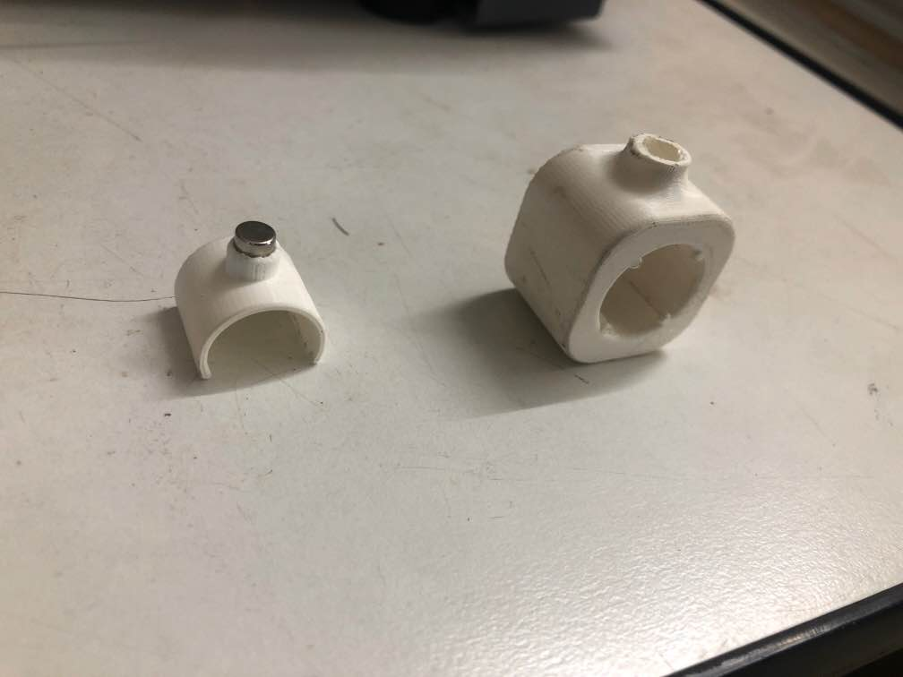

Introduction
I started a new project today which I would describe later on in this website. It consists of numerous systems and products. My mentor gave me a small task to design a marker holder which can be connected to a metallic board using a neodymium magnet. Using my prior knowledge of CAD, I designed a simple model.
Well, at first I thought that’s enough for a simple device with a single function but I was asked to make a similar device but my allowance for using the material was reduced to half which could be used in a range of markers. This indeed was challenging at first but I gave it a try.
At first I thought it wasn’t a big achievement but what I learned was waste reduction by flexible designing which would help me further in my project. I even learned how to operate a 3D printer(cetus) with UP studios.
Here’s the size and design comparison between both of the models. Another aspect I noticed about the larger holder was that it’s relatively heavy compared to the left one which gave it a disadvantage as it slowed my writing speed.

At the end I felt it was a quite productive day as I learned something new and began planning for my future project which was to motorize and automate my telescope so that it can locate and track celestial objects on it’s own.